Scene Locations (Spain)
Iskenderun Train Station
In 1938, after discovering the second marker in Venice, Jones sent Marcus Brody ahead to Iskenderun to meet up with Sallah and start the search for the Holy Grail while Jones went with Elsa Schneider to rescue Henry Jones, Sr.. Brody and Sallah met up at the train station, but Brody was kidnapped by Nazi agents, who took the map. Days later, Sallah met up with Jones and his father in the town, and drove them out to the desert, where they spied Walter Donovan's convoy and attempted a rescue.
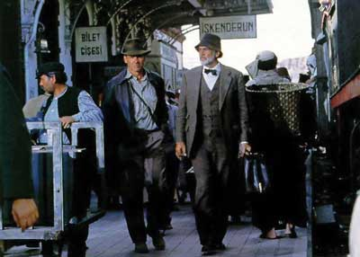 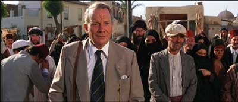Plane crash into a tunnel
Two P-2 fighters were sent to investigate the zeppelin D-138, which had two wanted fugitives, Indiana Jones and Henry Jones, Sr. aboard, after it left from Berlin. As the two Americans escaped from the zeppelin in a German biplane, the two fighters opened fire on the slower craft. Though the elder Jones fired the guns from the rear-facing biplane turret, the fighters avoided damage and continued to strafe the biplane.
When the biplane crash landed, the fighters circled to finish off their targets. As the two stole a Citroën automobile from an elderly man, one of the fighters strafed the fleeing car. As the car drove around a hillside and into a tunnel, the fighter followed, not expecting a solid hillside. The wings of the plane snapped off on the entrance of the tunnel, and the fighter pilot was amazed as his flaming fuselage sped up to the Jones' car, which allowed him to pass by. Before reaching the end of the tunnel, the wingless plane exploded, killing the pilot, but the Jones' managed to drive through the flaming wreckage unharmed.
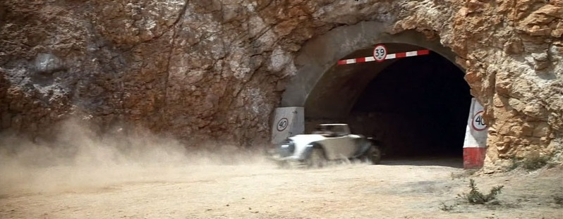 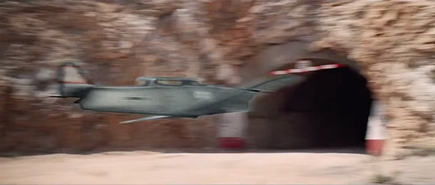Henry Jones Sr. scares the birds away with an umbrella
The second plane spied the car exiting the tunnel and dropped a bomb on the road, which exploded directly in front of the Joneses. The car fell into the large crater and stopped hard. Indiana Jones helped his father climb out of the car, and they headed down a slope to the seashore."While escaping from some Nazi fighter planes, Jones and his father climbed down to the shores of the sea after losing their stolen car. As the second plane circled around to shoot at the two men on the shore, the elder Jones, inspired by a verse from Charlemagne, used his umbrella to frighten the shorebirds into the air. With flocks of seabirds filling the sky, the fighter plane collided with several birds, jamming its engine, and smashing the cockpit glass. With a stopped engine, and unable to see, the pilot crashed the plane into a nearby hillside.
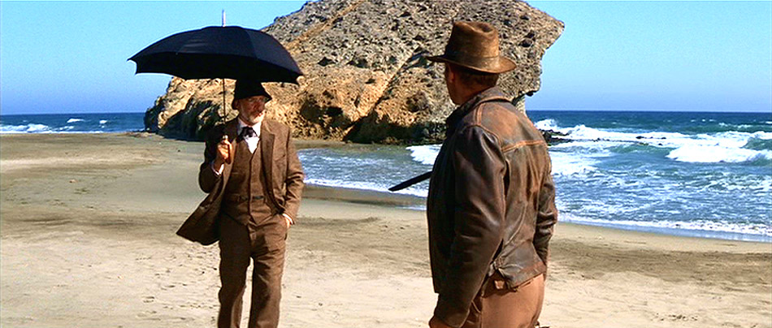 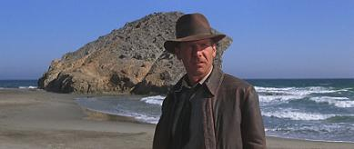Rolls Royce scene
When Walter Donovan and his Nazi colleagues sought to enter Hatay to search for the Holy Grail in 1938, they needed the Sultan's permission to cross Hatay's border. The Sultan, who valued technology over mysticism, did not believe in the legend of the Grail, and considered it a foolish quest, but was willing to allow them do as they wished in exchange for suitable compensation. He turned down the gold and jewels 'donated' by the finest families in Germany. However, he allowed them passage and even lent them some of his troops - in exchange for Donovan's Rolls-Royce Phantom II staff car.
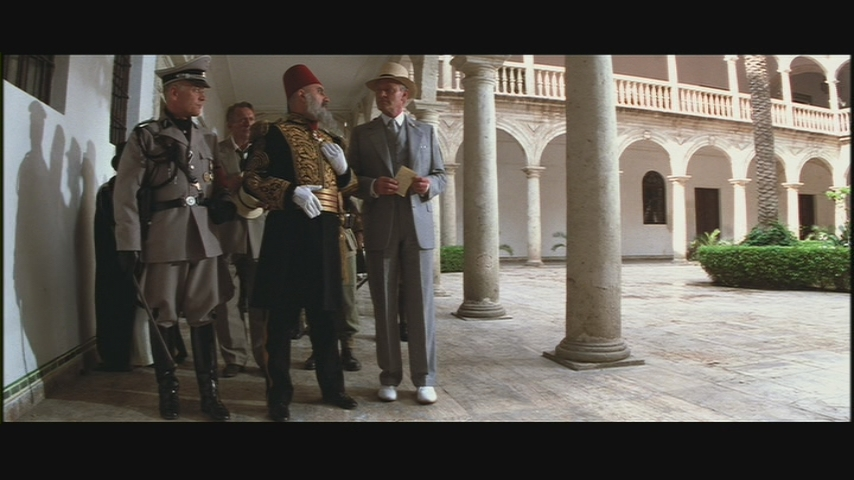 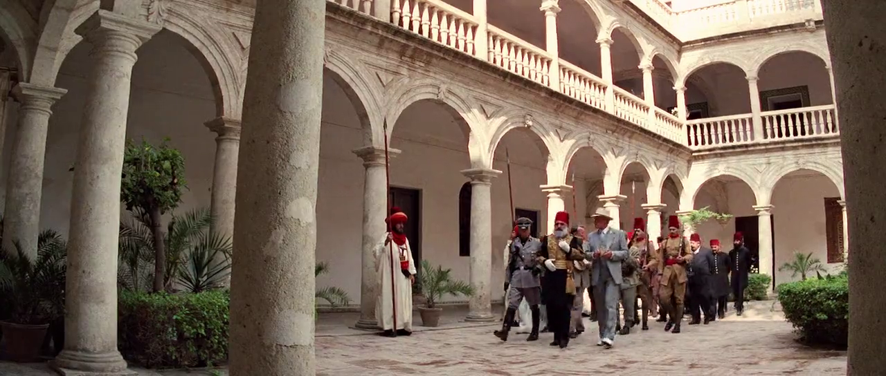In return for the prize automobile, the Sultan promised to provide provisions and troops for the expedition to recover the Grail, including camels, horses, and tanks.[http://indianajones.wikia.com/]
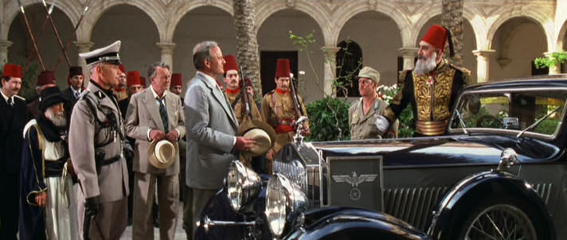Tank chase
When Walter Donovan and his Nazi colleagues sought to enter Hatay to search for the Holy Grail in 1938, they needed the Sultan's permission to cross Hatay's border. The Sultan, who valued technology over mysticism, did not believe in the legend of the Grail, and considered it a foolish quest, but was willing to allow them do as they wished in exchange for suitable compensation. He turned down the gold and jewels 'donated' by the finest families in Germany. However, he allowed them passage and even lent them some of his troops - in exchange for Donovan's Rolls-Royce Phantom II staff car.
 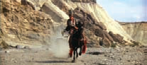
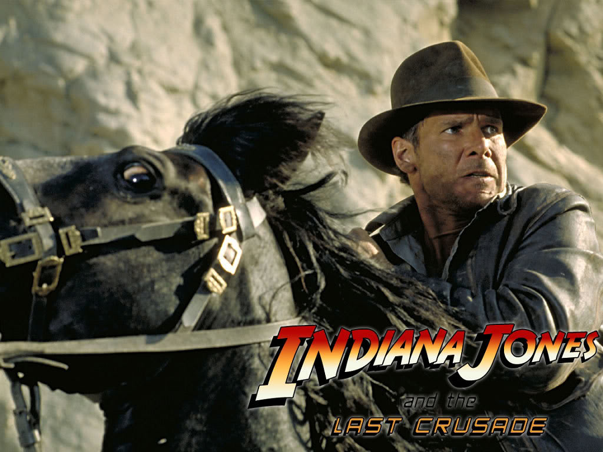
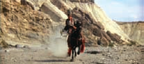
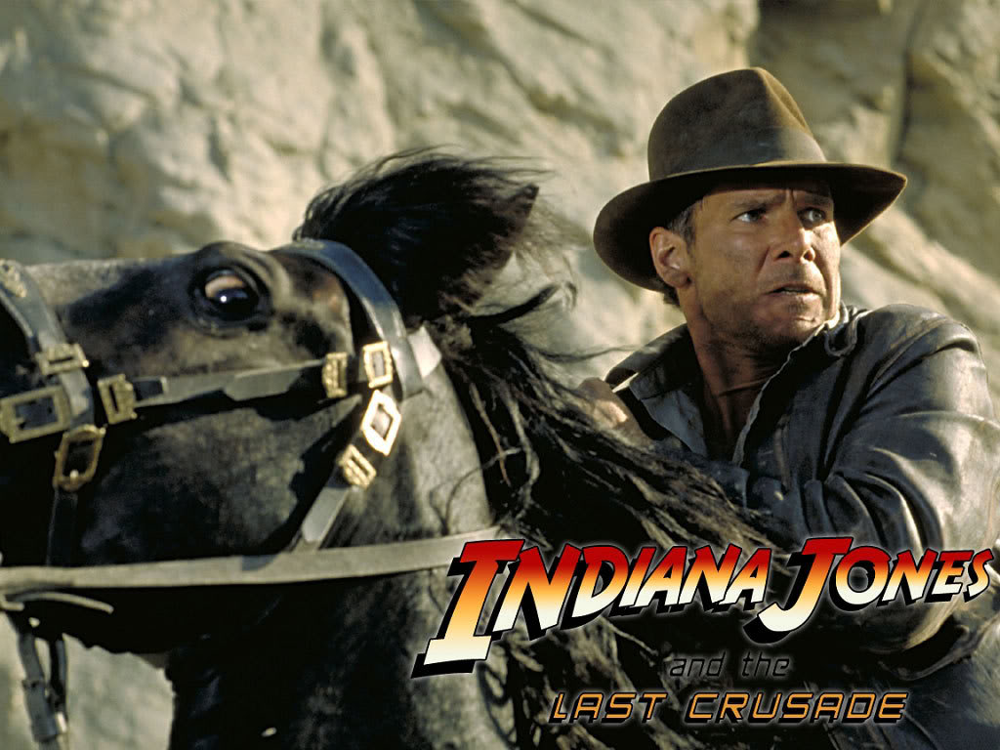


Tank falls into climp
On the way to the Grail Temple, there was an ensuing fight on the tank. As Indiana Jones was busy fighting Colonel Ernst Vogel on the top of the tank, his father, Henry and Marcus Brody were making their escape. The tank was destroyed shortly after the Hatay driver was indirectly killed by a Nazi soldier knocked unconscious by Brody. With nobody at the controls, the tank drove aimlessly off a nearby cliff, killing everyone aboard except Indiana Jones.
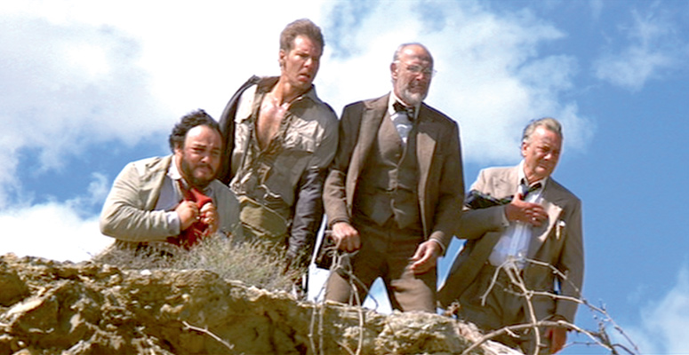 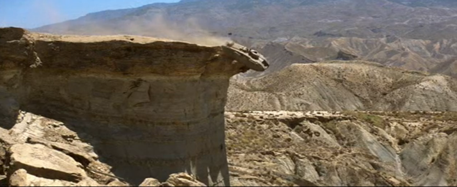to be continued...
Sources: